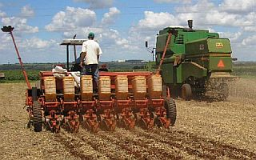

Agricultura
Curvas de Nível
Curvas de nível são utilizadas na confecção de mapas topográficos e representam diferentes cotas altimétricas encontradas em um terreno, importantes para a análise do relevo.
"Curvas de nível são linhas que interligam pontos que estão situados na mesma cota altimétrica em um terreno. Trata-se de uma técnica cartográfica muito importante para a produção de cartas ou mapas topográficos, que permitem identificar as diferentes feições de relevo e os acidentes topográficos existentes em uma região determinada."
Veja mais sobre "Curvas de Nível" em: https://brasilescola.uol.com.br/geografia/curvas-nivel.htm
Afolhamento
O termo Afolhamento designa uma técnica utilizada na agricultura e que consiste na divisão da exploração agrícola em folhas ou parcelas, cada uma com uma determinada cultura. Se as parcelas forem rotativamente cultivadas sem descanso entre culturas, diz-se que o afolhamento é contínuo. Se no intervalo de um ano ou mais uma das parcelas ficar em pousio, o afolhamento diz-se descontínuo.
O grande objetivo da utilização de técnicas de afolhamento na agricultura é o de assegurar a conservação da fertilidade dos solos, sendo esta a base das culturas intensivas.
As primeiras técnicas de afolhamento foram desenvolvidas na China há cerca de 2 mil anos. Nessa altura predominava um sistema de rotação bienal que consistia num ano de cultura seguido de um ano de pousio. Mais tarde desenvolveu-se o sistema trienal (3 folhas), caracterizado por dois anos de cultivo seguidos de um ano de pousio. Chegados aos séc. XVIII, em Inglaterra e durante a chamada Revolução Agrícola, generalizou-se o sistema de afolhamento quadrienal, no qual os terrenos eram divididos em 4 folhas e em que a folha que antes fiava em pousio passa a ser substituída pelo cultivo de plantas forrageiras para pastagem dos animais, permitindo não apenas o descanso do terreno, mas também a sua fertilização e a exploração pecuária.
Plantio Direto

O Sistema Plantio Direto (SPD) é o método mais conservacionista de trabalhar a terra para fins agropecuários. Caracteriza-se pela busca incessante da rentabilidade do sistema agrícola produtivo por meio da máxima expressão dos potenciais genético, edáfico e ambiental. A adoção deste sistema de manejo propicia a melhoria da qualidade de solo, água e ar, aumentando e estabilizando a renda da agropecuária.